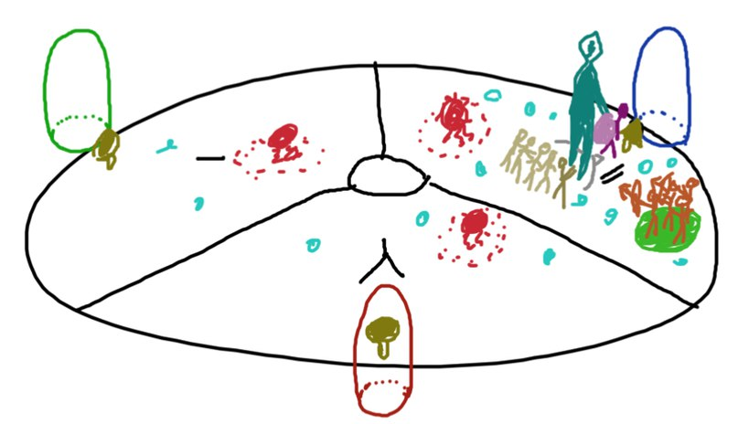
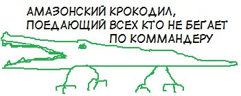

Vale Guardian
Содержание [скрыть]
Основная информация
Основы и подготовка
Есть разные мнения насчёт обязательности обладания полной ascended экипировкой для прохождения рейда. Как минимум вы должны иметь тринкеты и оружие ascended качества, так как их бонус по сравнению с тринкетами и оружием качества экзотик больше, чем у одежды. Рейды на данный момент достаточно сложный контент, где каждая секунда может оказать большой резонанс на исход попытки, и можно точно утверждать, что повышать свои характеристики до возможного максимума ради рейдов — дело абсолютно нормальное и правильное.
Состав группы
Предупреждение: как предисловие для этого раздела хочется сказать, что нет единственного верного варианта состава группы. При прочтении этого, держите в голове, что другие группы с отличающимся составом тоже могут убить босса. Vale Guardian не требует слишком высокий дпс и вы можете убивать его у более комфортном составе, именно для вас. Тот состав который описан тут, это то что сработало у нас, но это не значит, что вы не можете попробовать по-другому.
В общем, группа выглядеть так:
- 2 хрономансера (один из них танк)
- 2 хилера друида
- 1 войн баннерслав
- 2-3 конди ДПС
- 3-2 павер ДПС
Перед боем
Есть два варианта прохождения: с хождением на зелёные круги и без них. Ходить на зелёные круги достаточно просто, но при этом основная ответственность выпадает на танка, и если он не будет танковать правильно, то рейду грозят вайпы. А при втором варианте прохождения, самыми ответственными выступают друиды, так как рейд получает гораздо больше урона и если вовремя не выхилить, то рейд умрёт.
Для первого способа вам понадобится группа из 4 дальнобойных ДПСа, которые будут ходить на появляющиеся зелёные круги.
Также, вне зависимости от способа прохождения, вам понадобится чтобы один друид и два конди ДПСа ходили на красного Гвардиана во время фазы разделения (split).
Таймеры
Красные Seeker Orbs появляются каждые 20с
Телепортирующие синие круги появляются каждые 9с и взрываются через 2с
Зелёные круги появляются каждые 15с и взрываются через 5с
АоЕ сектор меняется каждые 20с
Брейкбар появляется каждые 30с
Механики
Бой с боссом разделен на 5 фаз. Две фазы — фазы разделения, которые происходят на 66% и 33%. Vale Guardian имеет 22 млн хп и энрейдж таймер на 8 минут.
Красные Seeker Orbs
Сикеры, красные шары. Три красных искателя появляются каждые 20с рядом с каждым из цветных пилонов. Они двигаются по направлению к игрокам и наносят урон. Они невосприимчивы к ослеплению, их нельзя убить, но вы можете использовать
иммобилизайз или отбрасывание, чтобы не дать им приблизиться к рейду. Это особенно важно, когда они прут в сторону игроков, стоящих в зеленых кругах.
На пятой фазе, в центре будет появляться дополнительный сикер.
Синие Телепортирующие Круги
Телепорт, синька или «ПЩЩЩЩЩБУПФХ». Эти синие круги появляются каждые 9 секунд, как правило, в диапазоне ближнего боя Vale Guardian. Они заряжаются около 2 секунд, а затем взрываются, нанося небольшой урон и телепортируя любого, кто оказался в них, в случайное место. Уклонения/блоки/ивейды — всё это работает против них, и, как правило, у вас есть достаточно времени, чтобы просто выйти из них. Они могут доставить проблем, если появятся в зеленых кругах и телепортируют игроков из них.
Зелёные круги
Зелёные круги, зелёнка, зелень. Эти зеленые круги появляются каждые 15с в случайном месте в том же секторе, что и босс. Круг может быть близко к боссу или далеко, но он всегда находится в одном с ним секторе. У вас есть около 5 секунд, чтобы 4 игрока зашли в круг, чтобы свести на нет взрыв. Каждый игрок, стоящий внутри круга, уменьшит урон от взрыва 25%. Внутри зелёного круга есть ещё один круг. Внутренний зеленый круг становятся все меньше и меньше, до тех пор пока не исчезнет, а когда он исчезает, происходит взрыв и если у вас нет 4 игроков, стоящих в зеленом круге, когда произойдет этот взрыв, ваш рейд получит большой урон. Лежащие игроки не считаются, поэтому, если у вас 4 игрока внутри зелёного круга, и один из них сбит, ваш рейд все равно получит урон. Даже с 3 игроками, стоящими внутри круга, рейд получит достаточно урона, чтобы сбить кого-нибудь, чей запас жизней не полон и может доставить много неприятностей. Зелёные круги — это наиболее приоритетная вещь на этом боссе. Вы можете назначит не 4, а 5 игроков которые будут ходить на них, или, если вы сидите в войсчате, можете назначить игрока, который по команде будет приходить на круги, когда один из четвёрки не может это сделать.
Заряженный АоЕ сектор
Эта механика есть только на 3 и 5 фазе. Начиная с зеленого сектора и продолжая по часовой стрелке, секторе поля боя будут заряжены каждые 20с. Заряжаются они в таком порядке: зеленый - > синий - > красный. Пока сектор заряжен, он каждую секунду наносит значительный урон всем кто находится в нём. Важно, чтобы танк вовремя переводил босса на новый сектор, потому что зелёные круги появляются там где находится босс, и если зелёный круг появится на заряженном поле, находится в нём будет проблематично. В таких случаях, на помощь четвёрке может пойти друид. На пятой фазе, заряжаются сразу два круга так: зелёный и синий - > синий и красный - > красный и зелёный.
Raidwide AoE
ЦЦ, брейкбар, сиси. Эта атака есть у босса только на 3 и 5 фазе. Каждые 30 секунд босс останавливается и у него появляется брейкбар, который необходимо сбить. Пока брейкбар не сбит, босс будет спамить красными шариками, которые наносят средний урон. Брейкбар необходимо сбить в кротчайшие сроки. Проблема этой механики в том, что она часто появляется одновременно с зелёным кругом и люди могут не успеть и дать контроль в босса и добежать до зелёнки.
Цветные Гвардианы
Общая механика для всех трёх — когда у гвардиана не останется жизней, у него появится брейкбар, который необходимо сбить, чтобы добить его.
Синий Гвардиан [split]
Тут есть две ключевые механики: особый бафф на боссе и зеленый круг. Зелёный круг точно такой же как нанужно только 3 человека внутри зеленого круга. Зеленый круг будет появляться довольно близко к Синему Гвардиану, так что особых проблем не будет. Синий Гвардиан получает бафф, который делает его невосприимчивым к урону каждые 10 секунд. Вам нужно будет снимать этот бафф. Хрономансеры отлично справляются с этой работой автоатакую мечём.
Зелёный Гвардиан [split]
Вокруг Зелёного Гвардиана появляются синие шарики которые наносят урон. Специальная атака Зеленого Гвариадан — синие телепортирующие круги, поэтому будьте внимательны и следите за ними.
Красный Гвардиан [split]
Красный Гвардиан имеет невосприимчивость к павер урону и для него выделяется группа из 2-3 конди ДПС, которые будут бить его. При хорошем уроне, его можно убить одновременно с Зелёным Гвардианом, но если группа как-то закончит раньше, то идти помогать не следует и лучше просто ждать когда остальных Гвардианов добьёт команда.
Фазы
Фаза 1
Эта фаза продлится до тех пор, пока босс не достигнет 66%. С хорошим DPS вы можете довести его до следующей фазы примерно за одну минуту.
Позицонирование
Поле боя с Vale Guardian — это круговая область, разделенная на 3 равных сектора, каждый из которых имеет различный цветной пилон в середине (красный, зеленый и синий).
В начале боя танк должен притащить босса на пилон рядом со Speed Boost грибами и держать его неподвижным, чтобы позволить рейду максимально комфортно вносить ДПС. Танк может избежать телепортации из-за синих кругов, уклоняясь в пилон через одну секунду после того как они появляются. Мы использовали синий пилон для легкого разделения в фазе 2. Игроки каждые 15 секунд могут забрать грибной бафф, который также увеличивает скорость атаки на 10%.
Босс имеет кливающую атаку ближнего боя, так что лучше будет отвернуть его лицо от рейда. Однако он поворачивается, когда порождает синие телепортирующие круги, но он не будет в это время атаковать рейд, так что в этом нет ничего, чего стоило бы опасаться. Стрелка под ногами босса покажет вам в какую сторону он смотрит и атакует.
Рейдеры обязаны находиться близко друг к другу и не разбегаться, чтобы получать все баффы и лечение от саппортов. Когда появляется зелёный круг - назначенные игроки бегут в него и бьют босса оттуда, а потом бегут обратно в кучу к остальными. Сикеры должны быть остановлены иммобилайзами или оттолкнуты, чтобы не убить рейд.
Если вы бегаете по всему полю и не стакаетесь с командой, то за вами придёт:
Фаза 2 (Split)
Босс переходит на вторую стадию на 66% HP. Vale Guardian станет невосприимчивым к урону и побежит к центру, прежде чем исчезнуть. Вы увидите пучки молнии, соединяющие его с тремя пилонами во время этого фазового перехода. У вас есть около пяти секунд, чтобы добежать до нужного сектора, пока появится три цветных Гвардиана: Синий, Зелёный и Красный, каждый на соответствующем пилоне. Это надо сделать как можно быстрее, потому что во время их появления, каждый игрок получит метку, соответствующую сектору, на котором он находился в этот момент. Если игрок с меткой одного сектора будет находится в красном круге другого Гвардиана, то он будет получать большой урон. Все все конди ДПС должны пойти к красному пилону, павер дпс к синему, а танк в одиночку к зелёному. Танк может либо подождать, пока команда убьёт Синего Гвардиана, а потом привести его к команде, либо, если вы уверены в ваших друидах, то привести Зелёного Гвардиана к Синему сразу, что позволит немного увеличить скорость прохождения.
Фаза 3
Фаза 3 длится от 66% до 33%. Она будет такая же как фаза 1, но с двумя новыми механиками. Заряженный АоЕ сектор, меняющийся раз в 20с, заставит группу передвигаться. Из-за этого войны баннерславы могут скинуть свои баннеры в середине поля. Также, раз в 30 се
Фаза 4 (Split)
Фаза 4 аналогична 2 фазе на 66%. Иногда зеленый круг может появится прямо перед этим фазовым переходом, заставляя вас стоять в нем, пока происходит переход. Это может сломать вам построение и в такой ситуации, если зелёный круг появился на синем или зелёном поле, то в нём должны стоять 4 человека из отряда, который закреплён за Синим Гвардианом, а если в красном, то весь отряд конди ДПСов и один из друидов и\или воин.
Фаза 5
Самая сложная фаза и большое количество вайпов случается именно на ней. Единственная ошибка может не дать вам успешно убить VG. Нет новых механик, но некоторые механики из фазы 1 и фазы 3 модифицируются. Так вместо одного заряженного сектора, их сразу два. Из-за этого танку очень важно вовремя переводить босса из одного сектора в другой, чтобы зелёный круг появился именно в единственном не заряженном секторе. Также, дополнительный сикер будет появляться в центре поля, что будет дополнительной опасностью и игрокам нужно будет внимательнее следить за ними, чтобы вовремя остановить их иммобилайзом.
Энрейдж
Энрейдж таймер — 8 минут. Через 8 минут Vale Guardian будет наносить на 200% больше урона. Его еще можно убить, даже если вы допустили энрейдж. Если некоторые ваши ДПСы умерли, то это вполне возможно. Также бывают ситуации, когда у босса осталось 0.5-2% ХП и многие или вообще все лежат в сбитом состоянии. Помните, что на боссе тикают доты и не сдавайтесь до последнего.